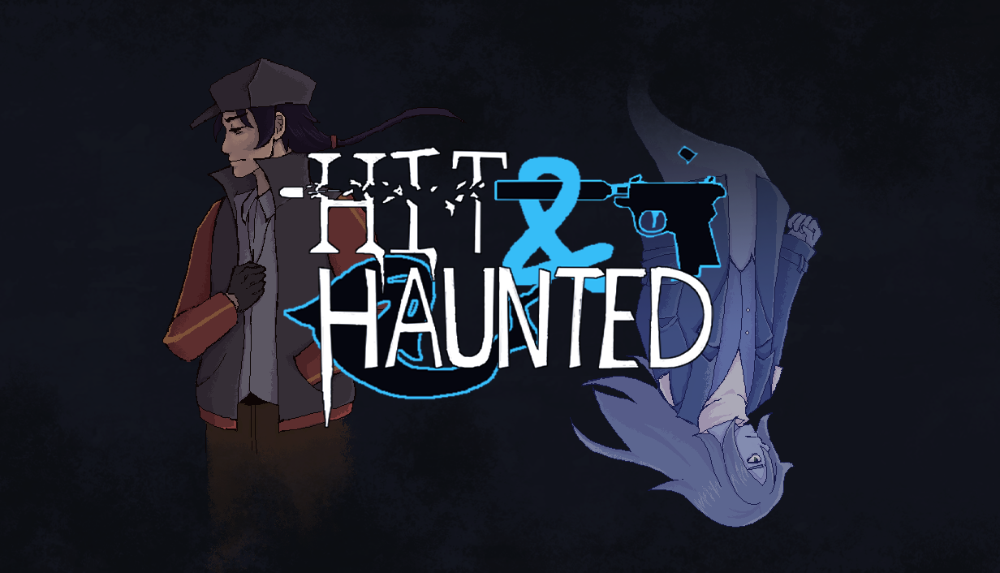
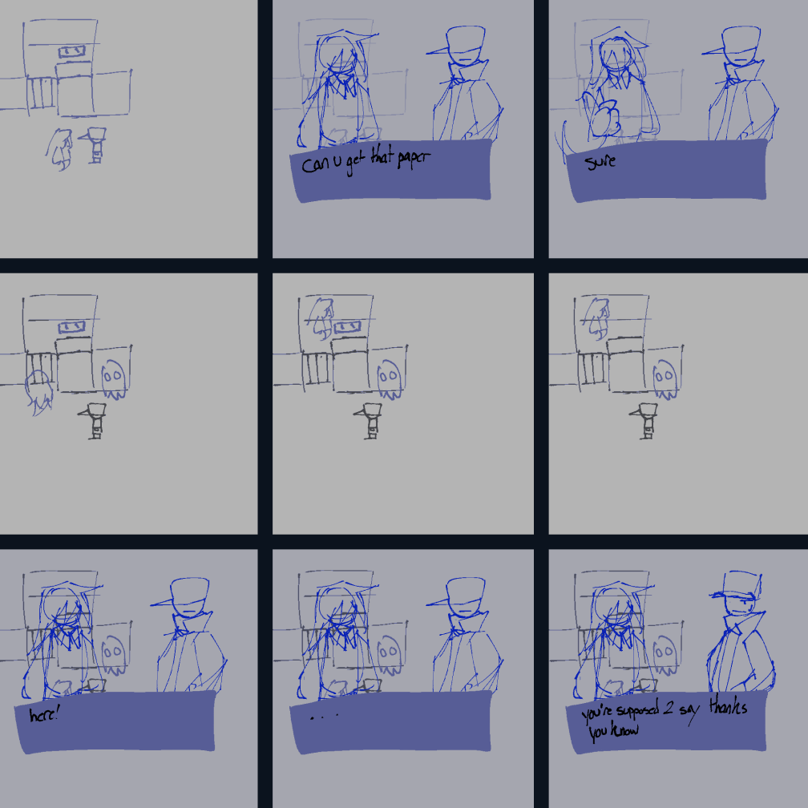
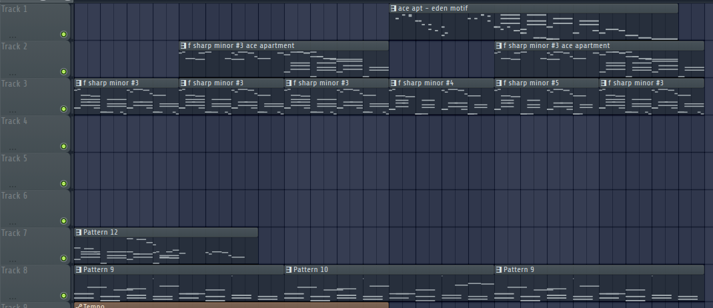

Project Overview
Hit & Haunted is a murder mystery game where you play as the killer: a hitman named Ace. Shortly after witnessing his kill you quickly encounter the other playable character: a ghost of the victim named Eli. So together, you have to find out who hired the hitman, and why.
You can play the demo of the game here: Hit & Haunted on Steam

Context
Genre: Adventure
Team Size: 3
Platform: PC (Windows Only)
Development Time: January - April 2025
Tools Used: Clip Studio Paint (Art), Adobe Photoshop (Steam Assets), Final Draft (Script), Figma (Flowchart), FL Studio (Music, Sound), Audacity (Sound).
Hit & Haunted's demo was a graduation-level project that was completed within a four-month timeframe. I worked alongside Yuki and Jillain for this project, my roles consisted of designing the characters, and writing the script after deciding on the overall plot with the other members. I also composed the music and handled the sound design for the game.
Objective
The goal with Hit & Haunted was to gain experience in creating an industry-level game, with appropiate scale and to market and eventually release it to the public. At first, we needed to find like-minded people in the class to work with by creating a presentation about ourselves and the kind of project we wanted to create. I ended up with Yuki and Jillain, who were also interested in creating a game.
After we got together, each of us ideated three different ideas for a game, each sharing an air of mystery. Once we got feedback after presenting these ideas, the one we went forward with was the idea that I made a visual for: it was one that revolved around a hitman and a ghost solving the murder mystery. We went with it thanks to the unique idea of swapping the roles around.


Ace & Eli
The protagonist: Ace and his partner: Eli, was the first thing I began writing, as both their personalities, role and backstory would decide what kind of world they live in as well as how the story would go. With a duo, we naturally decided that they should have contrasting personalities, which would reflect in their silouhettes. Ace was a someone who was serious, no non-sense, resulting in a silouhette with sharp shapes and giving off a more intimidating look. While Eli, someone less serious and a bit more light-hearted, would have a rounder silouhette as a result.
To keep an air of mystery, Eli's design wouldn't reflect Eli's true occupation, while Ace's design would be made out of clothing that wouldn't make him stand out of a crowd.

Script & Story
At first, the group got together to decide on the story beats of Hit & Haunted, we would have brainstorming sessions to work on this, this is where we would face our first dilemma. We would find the scope of the story and game to be way to big for our alloted time. We didn't want to cut down on the story, and so we asked our professor and TAs if we could down it to a demo, which they agreed to. In the end, the demo would contain up to part of Act 2 of the story, which would end in a cliffhanger.
Once we were happy with the story beats, Jillain and I would then refine it onto a proper story beat board in Figma. Each would have details such as the location time, and what would generally happpen. After that, I would write the script in Final Draft with the context of a screenplay, writing down dialogue and the specific actions a character would take. Next, I would put it down in a detailed flowchart in Figma, which would then be looked over by the rest of the team before we proceeded with development.
This flowchart would detail when sounds, music, as well as the type of talksprite expression would be used. This was done for ease of reading and quick understanding of building cutscenes and the dialogue. When we presented what we had at the moment, an issue our professor and playtesters had was with how bland Ace's internal thoughts were, even if they reflected his personality, the lack of flair would end up discouraging players from wanting to interact and find out more about the world. To alleviate this, I changed Ace's dialogue to be much more informative, letting players see how he thinks as well as hint at his past to build intrigue.

Music & Sound Design
I composed the music for the game in FL Studio, for the demo there are three total tracks: Ace's apartment, Eli's apartment and the cafe, with other areas being accompanied by diagetic sounds. For the apartment songs, they're meant to embody the character's personality and their state of mind. With Ace, his apartment track is static, representing his mindset which I intended to give off a feeling of someone who has yielded trying to change his life, with two motifs, one representing Ace, and the other representing something else that gives the theme pause. For Eli, his apartment theme is a lot more empty, giving a feeling of loss, with how it contrasts against Eli's current personality, I hoped it would make people wonder why the theme is like that. Finally with the Cafe, it wasn't meant to be as deep as the others, as its just meant as a song you would hear in a cafe.
Something important for gameplay was that the player could feel the difference when switching between Ace and Eli, so we made it so that everything, visually and audibly changes between perspectives. For audio, this meant that the track would switch from a more "normal" track to one that uses different instruments and effects (such as reverb and delay) to give it a more etheral feel. Although the composition would stay relaitvely the same, I made sure to include new and tweak already existing melodies as to not bore the player audio-wise.
Sound effects were a mainly ones I gathered from online sources, with some being edited in FL Studio for what I wanted to use them for. Other ones, like that ones play whenever Eli's abilities are in play are ones that were created by me in FL Studio.

Playtesting and Marketing
Once the demo was close to completion we had playtesters try it out, all of which we made sure were only aware of the premise of the game. From this we learned about various bugs, as well as parts of the story that didn't quite click for them. We would subsequently address this before finalizing the game.
To market the game we would create various social media accounts, though we found the most success on YouTube Shorts and TikTok. We ended up doing a mix of both informative videos about the game as well as comedic ones to take advantage of trends, we would post weekly and see a steady flow of engagement and followers/subscribers. With one of our videos managing to hit over 5000 views on YouTube shorts, an impressive amount for starting with nothing.
Conclusion
Creating the demo has been a rewarding experience, and I'm elated to continue working on it with Yuki and Jillain. It has led to a professor offering to mentor us to continue development on the game. We've had quite a bit of feedback on the demo thanks to being able to be showcased at various panels and access to wonderful playtesters.
From this point on, things such as the soundeffects, flow of events, and storyline are things I hope to improve in the game, as well as to take the opportunity to improve at animation through creating shorts to upload on our social media accounts.